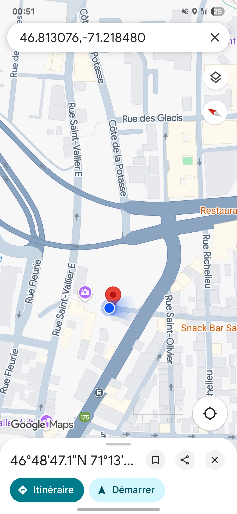
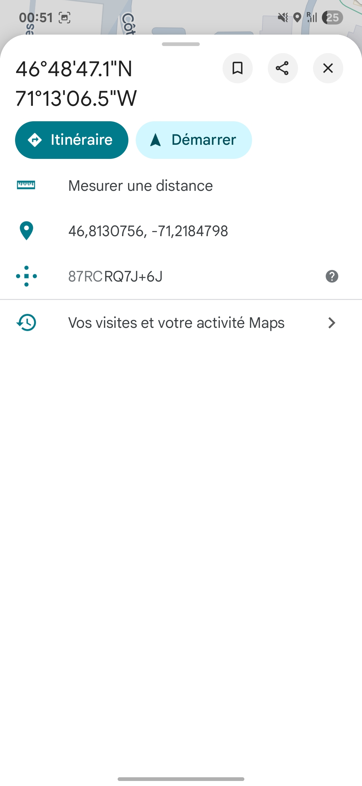
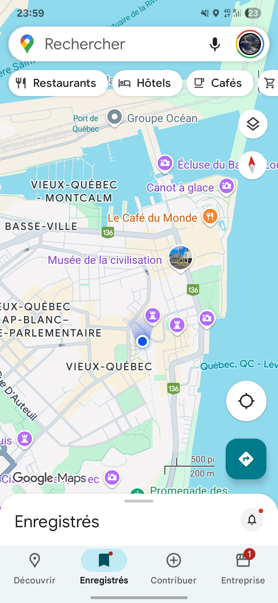
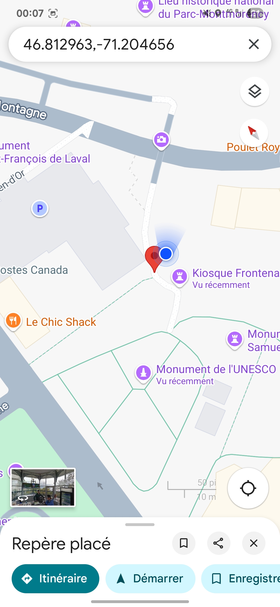
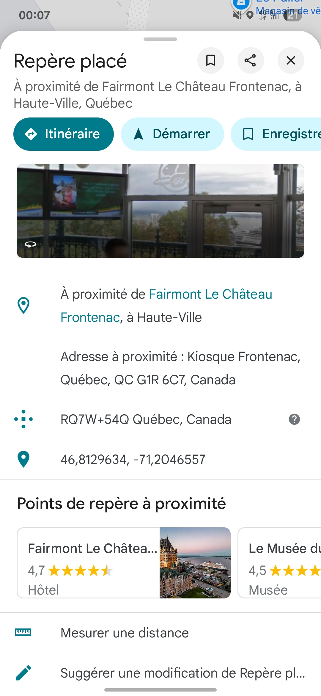
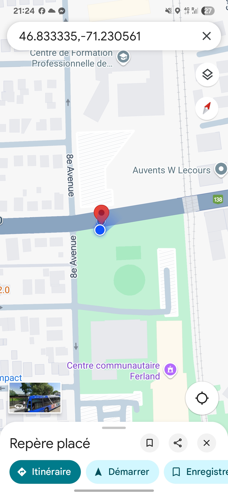
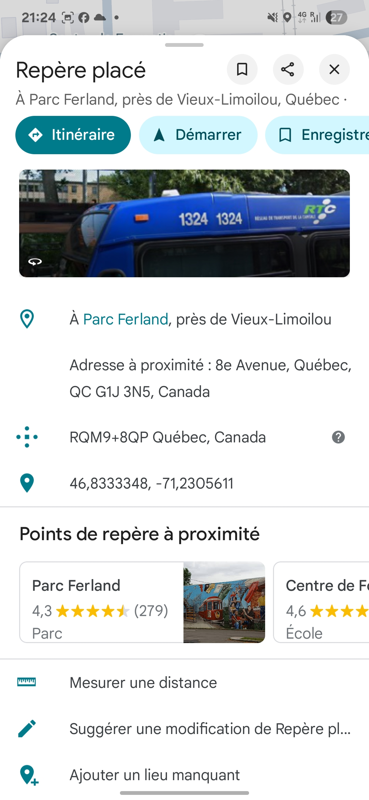
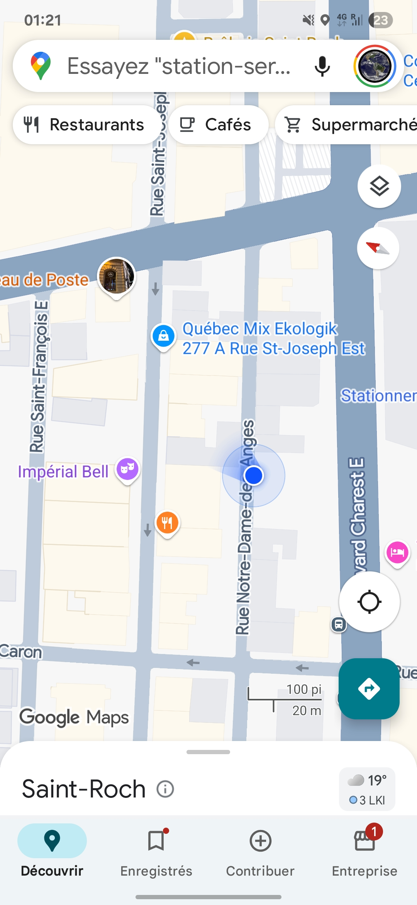
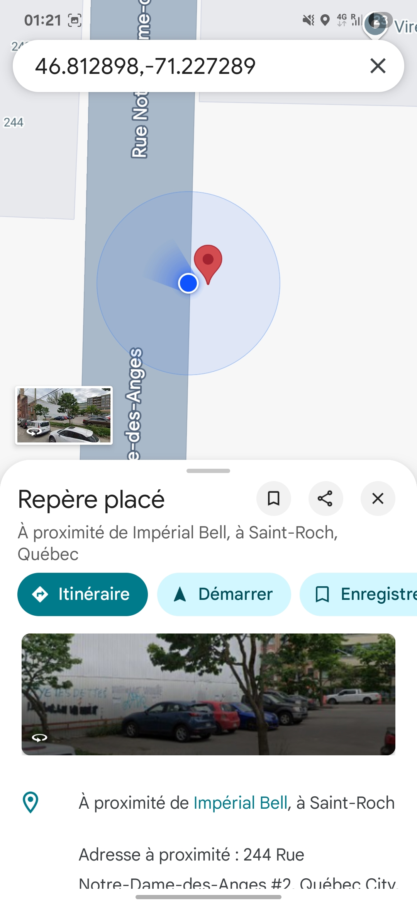
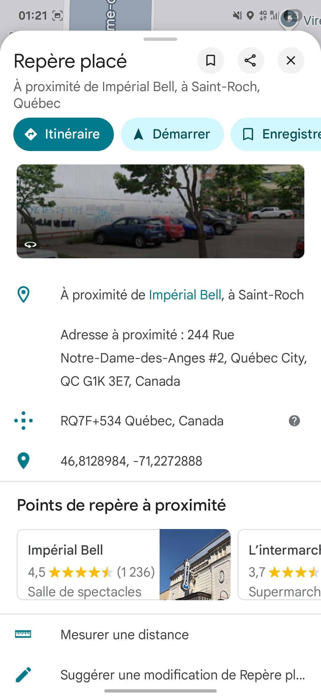

Comme tu t'en souviens, quand je suis parti à Quebec, je t'ai laissé des post-its afin que tu puisses avoir une petite trace de moi pendant ton stage. Tu vas donc avoir une localisation ainsi qu'une petite vidéo de moi pour trouver chaque post-it (si ils sont encore là ahahah).
Je te mets en plus une petite explication pour chaque post-it afin que tu saches lequel est approprié pour chaque situation ou moment de ta visite de Quebec.
Tu me manques déjà <3
Ce post-it est fait pour quand tu arrives à Québec, il se trouve à l'endroit où je suis monté dans la haute ville la première fois. Bonne vidéo ;)
(Je t'envie tellement de découvrir tout ça)


Petit point historique pour celui-ci ! J'espère que tu auras le temps de te faire une petite visite générale de la ville et donc tu devrais passer assez proche de celui-ci.
D'ailleurs, si je ne me trompe pas, une fois tu m'avais montré un tobogant de neige près du chateau, ça doit être à 100m max !



Ce post-it est près de ton lieu de stage et donc tu risques de passer assez régulièrement près de lui. Cette soirée là on avait passé une heure à marcher jusqu'à l'hopital mais tellement content d'avoir pu le poser là !
J'ai pas pris de vidéo pour ce post-it ci mais tu dois chercher au niveau de l'abris du bus (voir même dessus). Bisouuuuuusssssss


C'est le post-it donc je suis le mien sûr on va dire ... La façon dont il est collé ne m'inspire pas confiance et il est pas très haut du sol donc on verra avec la neige ...
J'espère que mes indications ont étées assez claire (indice : il est sur le même mur que les graphs, comme j'adore ça)


